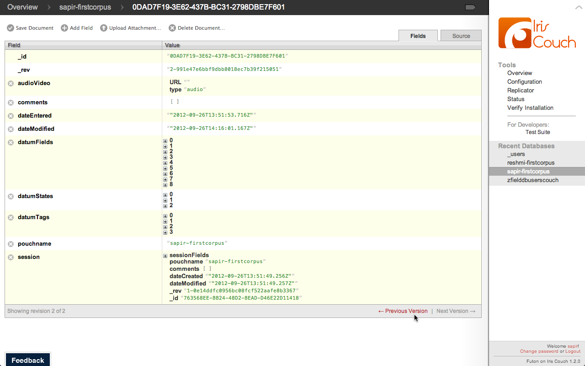

a case study
Taking Javascript into the field:
FieldDB is a 100% Javascript stack for
collaboratively collecting data. It was designed to run offline on
multiple platforms (Chrome Extension and Android). In this talk we
will discuss the hurdles along the way to building a data heavy
offline app.
Road Map
- FieldDB
- Persisting data client side with PouchDB
- Building for χ with Require.js
We will breifly go over our Architecture, which
is all OpenSourced on GitHub. Then we go more deeply into two key
libraries and how they fit into our stack: PouchDB alpha, a Javascript
implementation of the NoSQL database CouchDB, for storing large
amounts of data offline, and Require.js for simplifying development
and deploying to different targets.
- Offline
- Data intensive
- Highly structured data, but always changing
- Encrypted
- Web services
- Web widgets
- Offline: Fieldlinguists rarely have internet
- Data intensive: Fieldlinguists would import the web, if they
could
- Highly-structured: Fieldlinguists are super structured, but
never the same structure and the structure of the data usually
evolves over time as their analysis evolves and the data they
collect grows.
- Encrypted: Fieldlinguist's are bound to laws on the
protection of 'human subjects' which means some data needs to be
confidential, until the subject's death. This means encryption in
the database and decrypting only after authentication. An
interesting problem for an offline app where no code or tokens can
be hidden from the user...
- CPU intensive: Fieldlinguists have lots of repetitive tasks
and OpenSource projects which automate them, we use Node.js to bring
these in as web services.
- Web widgets: Fieldlinguists want to share their data, but
not all of it. Mash ups and mashability are what's missing from
existing fieldlinguistics database software..
What do we mean by Offline?
- Online
- Online and Offline/cached
- Only Offline
Most Javascript apps are not offline, they're
online in constant contact with a web server. Others are online and
can go offline for a period of time by living out of a cache. In our
case we are talking about completely offline. Files are delivered in
the first download of the app, and they persist (along with their
storage) even after the user has uninstalled the app (in the case of a
Chrome extension, or Android). Sure, the app has a few buttons which
make REST calls to a web service, but only when the user wants to
connect.
Our App is designed to run on a couple of clients, namely a
Chrome extension, an Android tablet and in a limited capacity, on a
website. There are 4 web services: Authentication,
AudioSplicing/Transcription, Search/MachineLearning, Database and a
webserver, 4 are Node.js and one is CouchDB itself.
We are using Backbone, Handlebars, Require.js to manage
dependencies and PouchDB which wraps IndexedDB. In this talk we are
going to look at two key libraries and their pitfalls which we think
might help you guys out, if you have similar stack.
Apache CouchDB is a database that uses JSON
for documents, JavaScript for MapReduce queries and regular HTTP for
an API.
NoSQL
Not all NoSQL is created equal, we love the
flexibility of Couch, we were using MongoDB for our users and found
changing the User Schema frustrating...
MapReduce
Search functions are written in Javascript using
the MapReduce programming paradigm, handy for semi-structured data,
handy for extracting training sets or running machine learning
algorithms in the data :)
Why CouchDB?
- NoSQL
- MapReduce
- Versioned data

Versioned
Couchdb is versioned which is super handy when
you have collaborative editing, as you can all imagine...
Why CouchDB?
- NoSQL
- MapReduce
- Versioned data
- Offline 'support' via PouchDB
- Mobile ''support'' via TouchDB
After about a month and a half we realized how
pre-alpha Pouch was. We spent a week on something, and came back on
Monday to it suddenly working because the Pouch guys had seen us
starting figure out their code.
PouchDB Modes
IndexedDB came out last December in Chrome,
that's fresh. There was a point in June when we knew our app wouldn't
work in September because the APIs were changing.
IndexedDB
A tip: You can see your docs in
IndexedDB/PouchDB by looking in the Resources tab of Chrome dev tools.
PouchDB Modes
We needed HTTPS because Chrome manifest v2
requires contacting only HTTPS services (in their fight to get rid of
malicious Chrome extensions etc). So we added it and then Dale brought
it over to Pouch.
PouchDB Modes
We needed HTTPS because Chrome manifest v2
requires contacting only HTTPS services (in their fight to get rid of
malicious Chrome extensions etc). So we added it and then Dale brought
it over to Pouch.
PouchDB Modes
- IDB
- HTTP
- HTTPS (new!)
- WebSQL (#63)
We needed HTTPS because Chrome manifest v2
requires contacting only HTTPS services (in their fight to get rid of
malicious Chrome extensions etc). So we added it and then Dale brought
it over to Pouch.
Vanilla Backbone Models (url or urlRoot property)
We expect most of you have done or seen some
Backbone or similar framework so we wont bore you with the details,
suffice it to say that you add a property and it says which table/API
your data is headed to..
To bring in pouch you simply call a function,
which returns a function that uses the IndexedDB you want.
The eval problem
By far the most exciting hurdle getting an alpha
library to run in a chrome extension was the eval problem. Eval is
evil, but sometimes a necesary evil. This is a line in Pouch which
takes in your Map function (so you can search in your database), which
is stored as a doc (i.e. string) in your database, and evaluates it
into code so it can be called. The best part is that Chrome extensions
can no longer call eval. So what good is a database if you cant search
it? And because the eval has to be called in the scope where the emit
function is defined, avoiding the eval requires a redesign of PouchDB.
So here is our hack...
Our hack
- Hardcode the Map and Reduce functions where emit is in scope
- Compare the desired function against the hardcoded versions
- Assign the hardcoded version to fun.map
We put together an object containing the
functions needed in our database for client side (we have some that
are just for webservices, training etc...). We do string match on
these functions compared to the function in the doc and call the
function that string matches. No eval problem, but still a hack and
requires putting code into the PouchDB library.
Our hack
Here are the 10 lines of code we had to bury
deep on line 2308 of pouch.alpha.js
RequireJS is a JavaScript file and module
loader. It is optimized for in-browser use, but it can be used in
other JavaScript environments, like Rhino and Node.
Turning now to modularity and code-reuse. Using
a script loader like RequireJS drastically reduced the complexity of
developing and deploying our codebase for multiple clients.
Why Require.js?
- Easier development using only local dependencies
- Smarter minification
- Better for building "widgets"
Require.js makes for cleaner classes, if you're
used to developing in Java, having Require makes you feel right at
home. Require.js calculates the files your class depends on and
includes them for you. Require can also 'build' your classes into a
minified js file for shipping down the wire, whether it be on page
load for a website, or when the user downloads your app from the
Android market. Similarly require helps for building a subset of the
codebase i.e. for building an activity feed widget which your users
can embed in their WordPress, website etc.
Getting libraries (Backbone, Underscore, JQuery)
to play
nice
with Require.js ...
As far as we can see there's a clear political
divide between two camps of Javascript developers. Here's what we can
pull away from it. One camp thinks you do/should always build and
therefore you don't need to use a module loader in development, and
one camp doesn't. Libraries from one camp dont (didn't) play nice with
libraries of others... Specifically getting Underscore/Backbone and
JQuery to play nice with Require.js has been a give-up point for a lot
of devs. We don't know much about the politics but there was a release
or two where underscore and backbone were AMD compliant but then it
was removed for some reason "As of version 1.3.0 Underscore removed
AMD (RequireJS) support."
http://stackoverflow.com/questions/8131265/loading-backbone-and-underscore-using-requirejs
Enter: shims (May 28, 2012)
The solution infact is simple, well, if you were
Googling after May 28th, when James burke the maintainer of Require
added in shims. After that we've had no trouble building new fancy
build and testing configurations... We are now over 14 libraries and
70 classes and no loading problems...
https://github.com/jrburke/requirejs/wiki/Upgrading-to-RequireJS-2.0
What it really looks like...
Don't like toy examples? Me neither... here is
what our require really looks like...
Build for Hackability
No, seriously. Deploying with a built in
Javascript console is a feature for our power users. They can automate
data cleaning, itterate through their data, use breakpoints and
more...
Hackability
We are power user friendly, and because write-permissions are double
checked on the server side, we let the users have full access to their
data...
var datums = appView.currentPaginatedDataListDatumsView.collection.models
for(var d in datums){
console.log(datums[d].get("datumFields").where({label:"utterance"})[0].get("mask"));
}
Build for Android
super small for download from market over 3g
Build Read Only Models
Reduce the hackability of your models...
Build Embeddable Widgets
auth, 3user, corpus->datalist, datum
Offline is tricky, but possible
- Start with Offline in mind
- Debug as a Chrome Extension
- If a library is in active development...
Here's our take home. We are glad we built with
offline in mind from the beginnning we developed in a Chrome
extension, with no server to hit. Debugging in chrome extensions is
almost everything we need, break points to run code in a context and
more. Finally, if a library is in active development take the time to
read the code, you'll be glad you did and you can contribute back to
the library.
 Acknowledgements
Acknowledgements
- PouchDB
- Our clients
- Our interns
We'd like to thank Dale and Joe the PouchDB guys,
with out which we would have had to do the whole db logic client side
ourselves. We'd also like to thank our clients for letting us keep our
codebase open source and finally our interns who went from logic class to
BDD without a drop of fear...
Questions?
Thanks, the client codebase and webservices are
all on github, we also have a dev blog where our interns created
screencasts and board casts of what they learned while developing the
app.